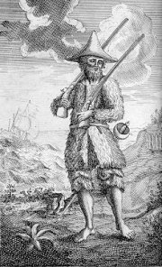
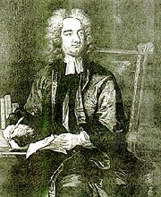

Diderotova Encyklopedie obsahovala příliš pokrokové myšlenky, a proto její vydávání zastavila cenzura. Posledních deset dílů muselo vyjít tajně.
|
OSVÍCENSTVÍ
Osvícenství je myšlenkový směr, který se prosadil v 18. stol. v Anglii (Locke, Berkeley, Hume), Francii (Montesquieu, Voltaire, Diderot), Německu (Lessing) a dalších zemích. Spolu s racionalismem ovlivnilo vědu, umění i politiku. Pojem osvícenství začal používat Voltaire a definitivně ho prosadil německý filozof Imanuel Kant (1724-1804), který napsal stať s názvem Co je osvícenství. Osvícenci chtěli šířit osvětu, a proto se věnovali hlavně naučné tvorbě, filozofii a vědě. Ve vlastní tvorbě se nenechali svazovat přísnými pravidly klasicismu. Upřednostňovali rozum (ratio) a přísně vědecké metody poznání založené na pozorování a zkušenosti. Buď zcela zavrhovali víru v Boha, nebo se hlásili k deismu jako Angličan John Locke (1632-1704). Většina francouzských osvícenců spolupracovala na projektu Encyklopedie aneb Racionální slovník věd, umění a řemesel (1751-1772), která měla obsáhnout veškeré poznání lidstva, proto se jim někdy říká encyklopedisté. Hlavními redaktory Encyklopedie byli d’Alembert a Diderot. Ve výtvarném umění se osvícenství neprosadilo. Jean-Baptiste Greuze [gréz] (1725-1805) maloval mravoličné výjevy (Návrat ztraceného syna) a francouzský klasicistní sochař Jean-Antoine Houdon [udon] (1741-1828) vytvořil podobizny významných osvícenců.
|
Historie
Osvícenský absolutismus se prosadil v Prusku, Rusku a především v Rakousku. Moc zůstala v rukou panovníka, který se proměnil v pilného reformátora. Řadu prospěšných reforem vyhlásila císařovna Marie Terezie (1740-1780) a její syn Josef II. (1780-1790) – povinná školní docházka, zrušení nevolnictví, toleranční patent (náboženská svoboda), katastrální reforma, sekularizace církevních majetků, zákaz jezuitského řádu...
|
Denis Diderot (1713-1784)

Denis Diderot [deni didro] byl hlavním redaktorem naučného slovníku Encyklopedie (Prospekt Encyklopedie). Pro své názory si musel mnohé vytrpět – pojednání Filozofické myšlenky bylo spáleno, protože obsahovalo protináboženské výpady, za List o slepých k ponaučení vidoucím byl dokonce poslán do vězení! Finančně ho podporovala ruská carevna Kateřina II. Romány Jeptiška, Rameaův synovec a Jakub fatalista a jeho pán a spis D´Alembertův sen mohly vyjít až po autorově smrti.
|
Denis Diderot: Jeptiška
Hlavní hrdinka antiklerikálního románu Jeptiška – Zuzana Simoninová je proti své vůli přinucena ke vstupu do kláštera. Matka představená ji sice laskavě přijme, ale její nástupkyně Zuzanu týrá, zvlášť když se dozví, že podala žalobu na zrušení svého řeholního slibu. V novém klášteře Zuzana naváže vztah s lesbickou abatyší. Nakonec se jí podaří uprchnout a stane se pradlenou.
Základem románu byla nevinná mystifikace. Diderot a jeho přátelé psali markýzi de Croismare dopisy, ve kterých ho uprchlá jeptiška žádá o pomoc.
|
Houdon: Mrznoucí dívka
Charakterizuj titulní postavu.
Čím vším musela projít?
Co víš o životě v klášterech?
Charakterizuj různé názory na krásno, jak je podává Diderot.
Souhlasíš s Diderotovými názory? S kterými a proč?
Co je podle tebe krásno? Co je krásné? Co se ti líbí?
Jak se nazývá věda o krásnu? Čím se zabývá?
|
Voltaire (1694-1778)
Voltaire [voltér], vlastním jménem François-Marie Arouet [fransoa mari arue], napsal přes 50 divadelních her (Irena, Mohamed čili Fanatismus, Semiramis, Čínský sirotek, Guebrové čili Tolerance...), eposy Henriáda a Panna Orleánská, prózy Candide, Mikromegas a Prosťáček, pojednání O snášenlivosti, Filozofické listy, Století Ludvíka XIV. a Historie Karla XII. Přispěl do Diderotovy Encyklopedie a sepsal Filozofický slovník. Voltaire se zastával nespravedlivě obviněných. Sám byl za epigram na Filipa Orleánského poslán do vězení a později musel emigrovat. Působil v Anglii, na dvoře pruského krále Fridricha II. a ve Švýcarsku.
|
Voltaire: Candide aneb O optimismu
Titulní hrdina románu Candide [kandid] žije na zámku německého barona, kde ho vychovává filozof Panglos. Jeho krédo je prosté: tento svět je nejlepší ze všech možných a není účinku bez příčiny. Když baron zjistí, že se zamiloval do jeho dcery Kunigundy, okamžitě svého chráněnce vyžene. Optimista Candide putuje světem plným podvodníků a prožívá řadu groteskních dobrodružství. Jeho cesty se několikrát zkříží s milovanou Kunigundou i Panglosem. V Americe objeví bájné Eldorado a za drahokamy, které zde získá, vykoupí své přátele z otroctví. Nakonec se všichni usadí na venkovském statku nedaleko Cařihradu.
|
Houdon: Sedící Voltarie
Jsi optimista nebo pesimista? Proč?
Co bys udělal/a s poklady z Eldorada?
Zkus Eldorado nakreslit.
|
Daniel Defoe (1660-1731)

Anglický spisovatel Daniel Defoe [denjel difou] bývá považován za předchůdce realismu. Je autorem románů Robinson Crusoe, Kapitán Singleton a Moll Flandersová.
Kterou knihu by sis vzal/a na opuštěný ostrov? Proč?
Co člověk potřebuje, aby přežil sám na pustém ostrově?
Co je robinsonáda?
|
Daniel Defoe: Robinson Crusoe
Robinson Crusoe toužil po dobrodružství, a proto se vydal na moře. Upadl ale do otroctví, a když se mu podařilo utéct, usadil se v Brazílii a věnoval se plantážnictví a obchodu s otroky. Při plavbě do Afriky jeho loď ztroskotala.
Trosečník je na ostrově úplně sám a musí se o sebe postarat. Po 25 letech zachraňuje divocha před kanibaly a dává mu jméno Pátek. Udělá z něj svého sluhu a snaží se ho naučit všemu, co umí. Nakonec se mu podaří vrátit se do Anglie.
Defoe ve svém románu líčí soudobou anglickou společnost i život mimo civilizaci. Robinson se na ostrov vrátí ještě jednou po 7 letech. Setká se tam s námořníky, kteří se vzbouřili proti kapitánovi lodě, jež trosečníka zachránila. Za trest tu byli vysazeni a museli se postarat sami o sebe jako on.
|

Robinson Crusoe na dobové ilustraci
Zapisuješ si pro (dobro) a proti (zlo), když se nemůžeš rozhodnout?
Proč Robinson učí Pátka svou řeč, neměl by se spíše naučit řeč svého sluhy?
Najdi v ukázce doklady racionalismu.
|
Jonathan Swift (1667-1745)
Anglický (irský) spisovatel Jonathan Swift je považován za předchůdce realismu. Věnoval se dráze anglikánského kněze a satirické tvorbě. V Povídačce o putně napadl konkurenční církve, ve Skromném návrhu, jak předejít tomu, aby se děti chudých lidí staly břemenem pro své rodiče nebo pro vlast, a jak je učinit užitečnými pro veřejnost ironicky doporučuje podávat irské děti k obědu boháčům. Proslavil se románem Gulliverovy cesty.
|
Jonathan Swift: Gulliverovy cesty
Swiftův román Gulliverovy cesty můžeme považovat za utopii, fantastický cestopis nebo satiru. Hlavním hrdinou knihy je kapitán Lemuel Gulliver, který navštívil zajímavé krajiny s podivnými obyvateli a zažil zde řadu dobrodružství. První země se jmenuje Liliput a žijí zde trpaslíci, druhá se jmenuje Brobdingnag a obývají ji obři, obyvatelé Laputy žijí odtrženi od skutečných problémů na létajícím ostrově a v kraji Hvajninimů vládnou primitivním lidem (Jahuům) ušlechtilí koně... Během cesty si Gulliver uvědomuje relativnost celé řady hodnot.
|

Najdi v ukázce prvky osvícenství a racionalismu.
Vymysli si další příhodu mořeplavce Gullivera. Jakou zemi by ještě mohl navštívit, s kým by se mohl setkat a co by tam mohl prožít?
|
Laurence Sterne (1713-1768)
Anglický spisovatel Laurence Sterne [lorens stern] se narodil v chudé rodině, ale po smrti otce se dostal k bohatým příbuzným, kteří mu umožnili získat univerzitní vzdělání. Sterne si zvolil život anglikánského pastora. Musel se vyrovnat s duševní chorobou své manželky.
Je autorem novátorských knih Život a názory blahorodého pana Tristrama Shandyho a Sentimentální cesta. Někdy bývá řazen k preromantikům.
Co si myslíš o Sternových experimentech s vypravováním? Zaujaly tě? Proč?
|
Laurence Sterne: Život a názory blahorodého pana Tristrama Shandyho
Román Život a názory blahorodého pana Tristrama Shandyho je zajímavý především způsobem vypravování. Sterne odmítá lineární děj a vetkává do svého příběhu tak velké množství odboček, až se v nich čtenář naprosto ztrácí. Román můžeme zároveň označit za experimentální i humoristický. Začíná plozením titulního hrdiny a pokračuje řadou nedorozumění, vsuvek a úvah, během nichž autor hlavní postavu zcela opustí. Příznačné je, že se předmluva místo na začátku knihy nachází kdesi uprostřed...
Další autoři a díla
Montesquieu: Duch zákonů, Perské listy
Fielding: Tom Jones, příběh nalezence
Rochefoucauld: Maximy
Paine: Věk rozumu
Gay: Žebrácká opera
Radiščev: Cesta z Petrohradu do Moskvy
|
V době osvícenství se nechávali šlechtici portrétovat s knihou, aby ukázali svou učenost. Tento obraz namaloval klasicistní malíř Mengs.

Greuze: Ochrnutý
|
Internetové stránky
Co to je, encyklopedie
Co je co, encyklopedie
Vševěd, encyklopedie
Britannica, encyklopedie
Diderotova Encyklopedie
Voltaire, informace
Gulliverovy cesty
Sterne

Greuze: Návrat ztraceného syna
|
Doporučená četba
Billy, A.: Život Diderotův, Praha 1988
Defoe, Daniel: Moll Flandersová, přel. G.Pospíšilová, Praha 1983
Defoe, D.: Robinson Crusoe, přel. Vyskočil, Vodička, Odeon, Praha 1986
Diderot, Denis: Jeptiška, Rameaův synovec, Jakub fatalista a jeho pán, Odeon, Praha 1977
Diderot, D.: O umění, přel. R.Grebeníčková, Praha 1983
Diderot, D.: Výbor z díla, přel. Binder, Veselý, Svoboda, Praha 1990
Encyklopedie aneb Racionální slovník věd, umění a řemesel, Praha 1954
Halada, Jan: Osvícenství – věk rozumu, SPN, Praha 1984
Hlinka, Bohuslav: Robinson Crusoe, Mýtus a skutečnost, Práce, Praha 1983
Im Hof, Ulrich: Evropa a osvícenství, přel. A.Kusák, NLN, Praha 2001
Kundera, Milan: Jakub a jeho pán, Pocta D.Diderotovi (dramatizace)
Orieux, Jean: Voltaire neboli Vláda ducha (2 svazky), přel. Z.Schanta, Odeon, Praha 1979
Sterne, Laurence: Život a názory blahorodého pana Tristrama Shandyho, přel. A.Skoumal, Odeon, Praha 1971
Swift, Jonathan: Gulliverovy cesty, přel. A.Skoumal, Praha 1953
Swift, J.: Výbor z díla, přel. A.Skoumal, SNKLHU, Praha 1953
Swift, J.: Zakletý duch, přel. A.Skoumal, Praha 1967 (korespondence, pamflety)
Voltaire: Romány a povídky, SNKLHU, Praha 1960
|
Připrav si referát o některé z uvedených knih nebo internetových stránek.
Které české encyklopedie používáš?
Které encyklopedie znáš?
Najdi v encyklopedii hesla: encyklopedie, osvícenství, Diderot, Voltaire, Defoe a Swift.

Co najdeš v pařížském Pantheonu?
Poznámka: Knihy Gulliverovy cesty a Robinson Crusoe si můžeš přečíst také ve zkrácených verzích určených dětem.
|
|